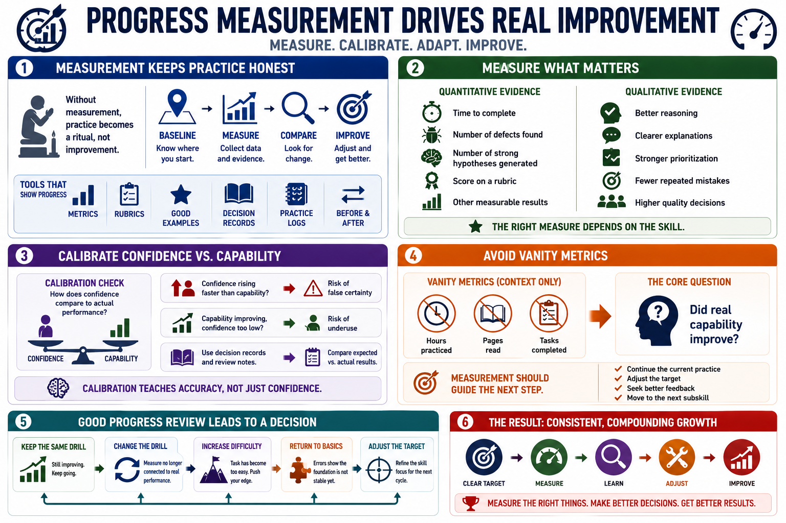

Measuring Progress
Connecting to LMS... Progress: in progress

Narration
Progress measurement keeps deliberate practice honest. Without measurement, practice can become a ritual that consumes time without improving capability. A baseline shows where performance starts. Metrics, rubrics, examples of good work, decision records, practice logs, and before-and-after comparisons can all help show whether the learner is actually improving.
Good measurement includes both qualitative and quantitative evidence. A quantitative measure might count time to complete a task, number of defects found, number of strong hypotheses generated, or score on a rubric. Qualitative evidence might include better reasoning, clearer explanations, stronger prioritization, or fewer repeated mistakes. The right measure depends on the skill being practiced.
Calibration is part of progress. A learner should understand how confidence compares to actual performance. If confidence rises faster than capability, practice may be creating false certainty. If capability improves but confidence stays too low, the learner may not use the skill when needed. Decision records and review notes help learners compare what they expected with what actually happened.
Avoid vanity metrics. Hours practiced, pages read, or tasks completed may be useful context, but they do not prove skill growth by themselves. The core question is whether real capability improved. Measurement should help decide whether to continue the current practice, adjust the target, seek better feedback, or move to the next subskill because the current bottleneck has improved.
A good progress review should lead to a decision. Keep the same drill if the learner is still improving. Change the drill if the measure is no longer connected to real performance. Increase difficulty if the task has become too easy. Return to a simpler component if errors show that the foundation is not stable yet.